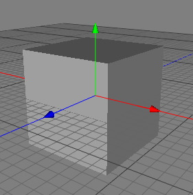

|
Box ObjectThe box is a parametric polygonobject that is one of the simplest pre-defined shapes you can add to your scene. Upon creation, it is a 1x1x1 cube at origin 0,0,0. Some variation is possible to the way the box is constructed since you can choose how many sections will make up each axis.  Properties
|